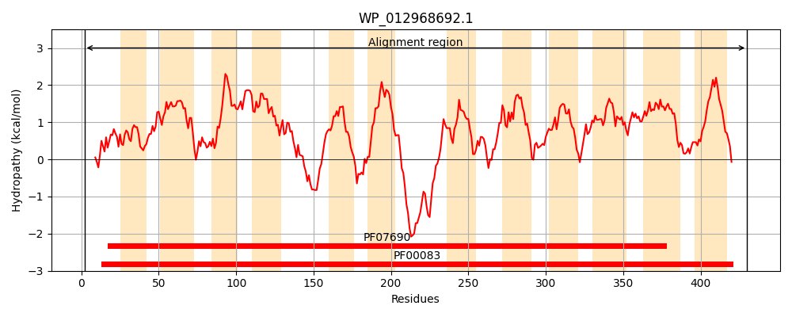
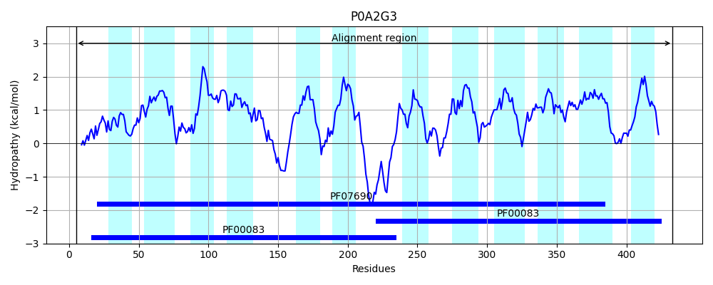
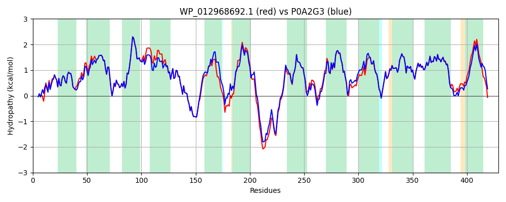

Hit Accession: P0A2G3
Hit TCID: 2.A.1.6.7
Hit Description: gnl|BL_ORD_ID|8550 gnl|TC-DB|P0A2G3|2.A.1.6.7 Citrate-proton symporter - Salmonella typhimurium.
Mach Len: 429
e:0.000000
Query TMS Count : 12
Hit TMS Count: 12
TMS-Overlap Score: 11.850000
Predicted Substrates:CHEBI:50744;citrate salt, CHEBI:62517;tricarballylate
BLAST Alignment:
Score: 2014 , Bit scores: 780 bits, E-value: 0.0e+00, Alignment length: 429, Percentage identity: 90
Query: 2 TQQSTRAGTVGAILRVTSGNFLEQFDFFLFGFYATYIARTFFPAESEFAALMLTFAVFGSGFLMRPIGAVVLGAYIDRIGRRKGLMVTLAIMGCGTLLIALVPGYQTIGVLAPILVLVGRLLQGFSAGVELGGVSVYLSEIATPGNKGFYTSWQSASQQVAIVMAALIGYALNATLEHEEIADWGWRIPFFIGCLIIPLIFVLRRSLQETEEFLQRKHRPDTKEILTTIARNWRIITAGTLLVAMTTTTFYFITVYTPTYGRAVLHLSARDSLLVTMLVGISNFIWLPIGGAISDRIGRRPVLMGITLLALLTTWPVMHWLTAAPDFTRMTLVLLWFSFFFGMYNGAMVAALTEVMPVYVRTVGFSLAFSLATAIFGGLTPAISTALVELTGDKSAPGWWLMCAALCGFIATALLFVRLSRGYQPAESQ 430
T ++RAGT GAILRVTSGNFLEQFDFFLFGFYATYIARTFFPAESEFA+LMLTFAVFGSGFLMRP+GA+VLGAYIDRIGRRKGLMVTLAIMGCGTLLIALVPGYQTIG+ AP LVL+GRLLQGFSAGVELGGVSVYLSEIATPGNKGFYTSWQSASQQVAIV+AALIGY+LN TL H+ I++WGWRIPFFIGC+IIPLIFVLRRSLQETE FLQRKHRPDT+EI TIA+NWRIITAGTLLVAMTTTTFYFITVYTPTYGR VL+LSARDSL+VTMLVG+SNFIWLPIGGAISDRIGRR VLMGITLLAL+TTWPVM WLTAAPDFTRMTLVLLWFSFFFGMYNGAMVAALTEVMPVYVRTVGFSLAFSLATAIFGGLTPAISTALV+LTGDKS+PGWWLMCAALCG ATA+LFVRLSRGY AE++
Sbjct: 5 TPATSRAGTFGAILRVTSGNFLEQFDFFLFGFYATYIARTFFPAESEFASLMLTFAVFGSGFLMRPVGAIVLGAYIDRIGRRKGLMVTLAIMGCGTLLIALVPGYQTIGLAAPALVLLGRLLQGFSAGVELGGVSVYLSEIATPGNKGFYTSWQSASQQVAIVVAALIGYSLNITLGHDAISEWGWRIPFFIGCMIIPLIFVLRRSLQETEAFLQRKHRPDTREIFATIAKNWRIITAGTLLVAMTTTTFYFITVYTPTYGRTVLNLSARDSLIVTMLVGVSNFIWLPIGGAISDRIGRRAVLMGITLLALITTWPVMQWLTAAPDFTRMTLVLLWFSFFFGMYNGAMVAALTEVMPVYVRTVGFSLAFSLATAIFGGLTPAISTALVKLTGDKSSPGWWLMCAALCGLAATAMLFVRLSRGYIAAENK 433 | Protein Hydropathy Plots: |
|---|
|  |  |
Pairwise Alignment-Hydropathy Plot:
|
|---|
|  |